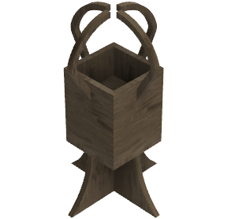

Final Project
Group
The group for the final project consisted of Aron Björn leifsson, Axel Thor Aspelund and myself. We are all in our last year in Mechanical Engineering and for the final project we decided to mill a flowerpot, which is then to be used in another course. My colleagues’ sites can be found here:
Workload
| What was done | Time spent[hours] |
|---|---|
| Deciding what to make | 4 |
| Designing and drawing | 3 |
| Preparing design for printing | 2 |
| Preparing printer | 1 |
| installment | 1 |
| Documentation | 10 |
| Total work | 21 hours |
Before we get started
Before the group could start we had to decide what to make. Due to the fact we were already paired together in another course and had decided to create a self watering - and lighting flowerpot, it was ideal to make the pot itself in this course.
The pot we were to design needed to fulfill the requirements for both assignments, so quite a lot of planning went into the design. Here below you can see a rough draft what we needed the pot to look like:
Design
The group wanted to assemble the pot using only the methods we had learnt in this course, i.e. pressfits. The pot also required two "levels", one for the plant &dirt and another one for the water supply. We then got to work on drawing the pot up in Fusioon 360 whhich is a CAD software. After some deliberating, redesigns and a few cups of coffee the group ended up with a design everyone was happy with. Sincee we did not want to have to screw anything in place we decided it would be best to have many pressfits. We measured the height of the sides and divided by a number of integers until an integer was returned. For the sides this turned out to be 256/16 = 16, so the result was 16 "gaps" with a width of 16 mm. To fasten the bottom panel we opted for two 30mm gaps on each side, and for the middle we chose to make four protruding edges with a width of 75mm. On the bottom there are 4 18mmx18mm holes, which serve as the fasteners for the stand, which is put together with two simple slits in the middle. Lastly the holes which hold the lighting beams in place are 18mmx18mm. Snapshots of the final design can be seen here below:
Milling
For the milling to work you first have to download an application, called Vcarve, and a link to the application can be found here. The application you can download for free is a trial version, but everything you'll need is included in that version. to get started, you first have to import your Fusion 360 drawings as a .DXF (Drawing Exchange Format) file, and import that into Vcarve. From there you can set your feeds and speeds, as well as the toolpaths. For your settings to be accurate you have to know what kind of milling teeth you'll be working with. In our case there were two. 6 mm Down-cut, which means the grain is pushed downwards for a finer edge was used for the first 3 mm, and then a 6 mm Up-cut for the rest of the milling
Feeds and speeds
The feeds and speeds were set after consultation from our teacher, and were the same for both the Down-cut and Up-cut milling teeth. A screenshot of the settings can be seen below:
When you have successfully set your feeds and speeds you can get started on the toolpaths
Toolpaths
Your toolpaths represent the movement the milling machine will have to take in order to mill your object. In our case all the milling should fully penetrate the object so we click "profile toolpath". From there we create two toolpaths, one for the down-cut in the range 0 - 3mm and one for the up-cut in the range 3-18mm which should cut through the plate. Make sure you pick the right tools for each toolpath. Lastly you need to add tabs to your toolpath. The purpose of the tabs is to make sure nothing moves while the milling is taking place so that everything comes out right. Lastly you click calculate and the toolpath is ready. Below you can see the toolpaths as well as the tabs:
Process
Here you can find images and a short video showing the process of making the flower pot.

.jpg)
.jpg)
.jpg)
.jpg)
.jpg)
.jpg)
.jpg)
Assembly
After the milling was completed the only thing left to was to assemble the pot. However we noticed that the Shop bot had messed up for some unknown reason, maybe warping in the plate, but it milled the toolpath between holes in two of our sides, and the holes were in completely the wrong place on the other two. The rest of the components however fit very tightly together. After a short chat with our teacher we concluded that the most likely reason for the failure was that since the vectors were not connected together they most likely moved when they were being prepared for the Shop Bot. Since we are recourceful we decided to just make the correct holes ourselves, and trim what didn't fit together. The correct hole was first drilled with a 17mm Ø hole saw, and then used a file to achieve the square shape. The middle platform was then trimmed with a band saw to make it fit (since the holes for the platform were in the wrong place).
The final product
Finally after all the above was completed we had a great flowerpot on our hands. The group was happy with the results (even though the Shop bot messed up a little). The group also felt the experience of working with the milling machine and learning how to prepare files for milling was a valuable experience and all in all felt the assignment was a success. The assembled flower pot can be seen in the following picture:
We'd lastly like to take the opportunity to thank our teacher for the semester and for his help in both his course and others.